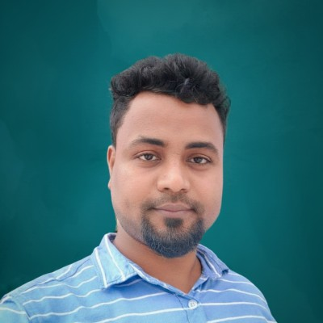

Joint Doctoral Researcher • 6TiSCH • Smart City IoT Systems
BITS Pilani Hyderabad Campus & La Trobe University, Melbourne, Australia
Designing adaptive scheduling frameworks for scalable and reliable IoT networks.

I am a Joint PhD researcher at BITS Pilani Hyderabad and La Trobe University, and a member of the Asian Smart Cities Research and Innovation Network (ASCRIN). My research focuses on adaptive scheduling and resource allocation in 6TiSCH-based IoT networks for smart city applications, aiming to enable scalable, energy-efficient, and reliable communication under dynamic and bursty traffic conditions.
I am supervised by Prof. Nikumani Choudhury (BITS Pilani Hyderabad) and Prof. Wei Xiang (La Trobe University)
An analytical model and control policy for slotframe adaptation, enabling predictable latency and efficient resource utilization in 6TiSCH networks.
An adaptive slotframe scheduling mechanism that dynamically adjusts slotframe size based on traffic load to improve energy efficiency and latency in 6TiSCH networks.
A topology-aware scheduling approach that allocates resources based on node position and traffic load to enhance reliability and load balancing in multi-hop IoT networks.
Adaptive Slotframe Scheduling for 6TiSCH
IEEE GLOBECOM • 2025 • Taipei, TaiwanTeaching Assistant at BITS Pilani Hyderabad Campus